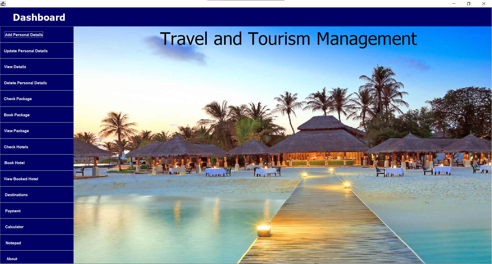

Tourism Management System Project
Description of Project 1.The Tourism Management System Project is a web-based application designed to streamline
and enhance the management of tourism-related services. It enables users to browse travel packages, book trips,
and access information about destinations, all in a user-friendly interface.This project showcases skills in
front-end development (HTML, CSS, JavaScript) and back-end integration (e.g., SQL, Java) to create a seamless
and interactive experience for users.

Student Management System
Description of Project 2. The Student Management System is a web-based application designed to manage
and store information about students in a school or educational institution. The Student Management System
is a simple web-based application designed to manage and organize student data. It allows administrators to
add, edit, and delete student records, view detailed information, and search for students by name or ID.
The system is built using HTML for structure, CSS for styling, and JavaScript for interactivity and dynamic
content management. This project demonstrates skills in front-end web development, providing an easy-to-use
interface for managing student details efficiently.